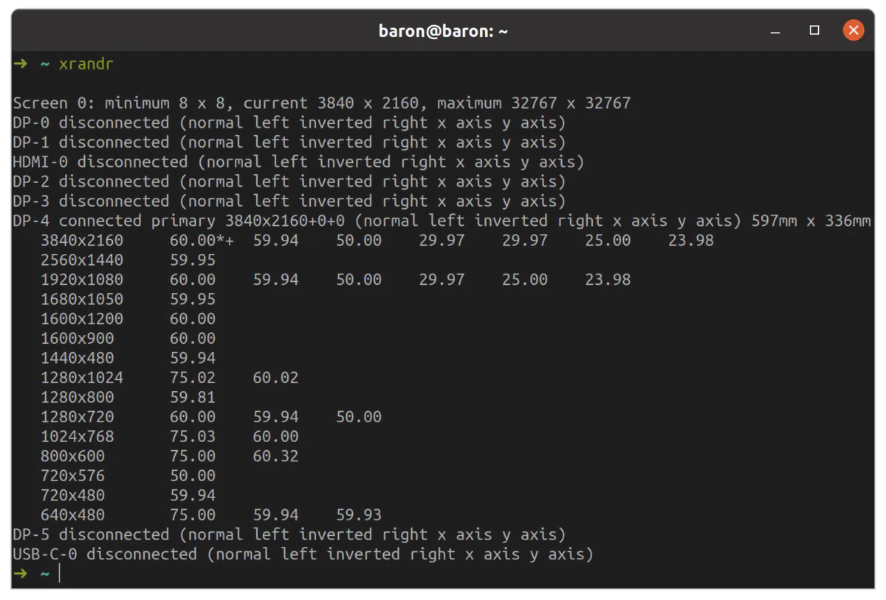
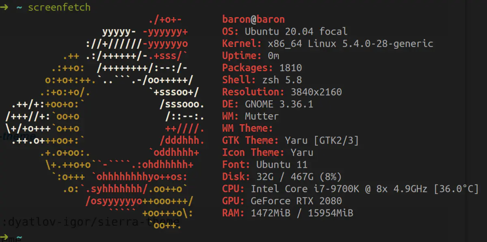
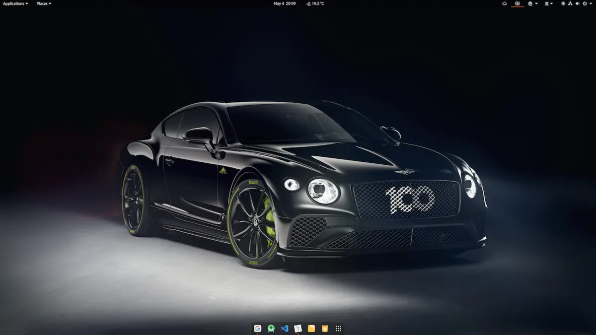

（王同学笔记作品）
（王同学笔记作品）
 （王同学笔记作品）
（王同学笔记作品） （李书琪笔记作品）
（李书琪笔记作品） 李书琪笔记作品
李书琪笔记作品


 （GoodNotes 5）
（GoodNotes 5） （Notability）
（Notability） （左：GoodNotes 5 右：Notability）
（左：GoodNotes 5 右：Notability） （GoodNotes 5 钢笔笔迹）
（GoodNotes 5 钢笔笔迹） （Notability 二级点选菜单）
（Notability 二级点选菜单）


写给工程师的 Ubuntu 20.04 最佳配置指南
最近 Ubuntu 发布了 20.04 LTS 版本，我也在第一时间安装体验。由于各种 Linux 发行版本并不像 MacOS、Windows 一样开箱即用，因此需要做很多配置。每次配置都需要查阅各种资料，虽然网络上有很多配置文章，但基本上都会存在一些问题：
- 只教怎么做，不说为什么；
- 文档陈旧，不更新；
- 内容缺失，不丰富；......
因此我希望整理一份最佳配置指南，除了记录需要做什么，还会说明背后的原理和技术背景。一方面方便自己今后查阅，另一方面也想将这份指南分享给大家，并和大家一起逐步完善它。所以，这是一份会持续更新的、有实操有原理、内容丰富的最佳配置指南。
关注公众号 BaronTalk，回复 Ubuntu 即可下载最新的 PDF 版本配置文档。
一. 系统配置
1. 关闭 sudo 密码
为了避免每次使用 sudo 命令时都输入密码，我们可以将密码关闭。操作方法：
第一步：终端输入命令sudo visudo，打开 visudo；
第二步：找到 %sudo ALL=(ALL:ALL) ALL 这一行修改为%sudo ALL=(ALL:ALL) NOPASSWD:ALL
2. 修改软件源
Ubuntu 默认的软件源是境外的，速度上会有些问题，我们可以在「Software & Updates」(软件和更新)中选择国内的镜像。

3. 更新系统
# 更新本地报数据库
sudo apt update
# 更新所有已安装的包（也可以使用 full-upgrade）
sudo apt upgrade
# 自动移除不需要的包
sudo apt autoremove
这里补充几个常用的清理命令：
| 命令 | 描述 |
|---|---|
| apt autoclean | 将已删除软件包的.deb安装文件从硬盘中删除 |
| apt clean | 同上，但会把已安装的软件包的安装包也删除掉 |
| apt autoremove | 删除为了满足其他软件包的依赖而安装，但现在不再需要的软件包 |
| apt remove [软件包名] | 删除已安装的软件包（保留配置文件） |
| apt --purge remove [软件包名] | 删除已安装包（不保留配置文件） |
4. 高分屏适配
默认情况高分屏下 UI 元素显得过小，因此需要调整界面的缩放比例。Ubuntu20.04 默认是 GNOME 桌面，GNOME 可以在 Settings>Displays（设置>显示）中开启 HiDPI 支持，以整数倍来调整屏幕比例。也可以通过如下命令的来设置：
# scaling-factor 仅能设置为整数 1=100%，2=200% 3=300% ......
gsettings set org.gnome.desktop.interface scaling-factor 2
整数倍的缩放设置，在部分设备上 UI 元素要么显得过大，要么显得过小，因此我们需要进一步调整。
使用下面的命令查看你 Linux 设备上的 Window System（图形接口协议），通常是 Wayland/X11
echo $XDG_SESSION_TYPE
Wayland
如果是 wayland，使用下面的命令启动实验性的非整数倍缩放功能。
gsettings set org.gnome.mutter experimental-features "['scale-monitor-framebuffer']"
之后再次打开 Settings>Displays，就可以选择非整数倍缩放（125%、150%、175%）。Ubuntu20.04 已经在 Settings>Displays 中提供了图形化的界面来开启实验性的非整数倍的缩放功能，因此无需通过上面的命令来开启。
我试验下来，这种方式无法在我的设备上正常设置非整数倍缩放。我判断是因为 Ubuntu20.04 默认的 Window System 是 X11 而不是 Wayland，如果你的设备上是 Wayland，应该是可以正常设置的。或者你在登陆桌面系统时选择 Ubuntu On Wayland 理论上也是可以的。
X11
对于 X11，我们可以同时使用 scaling-factor 和 xrandr 来实现非整数倍缩放，这可以使 TTF 字体被正确缩放，防止单独使用 xrandr 时出现的模糊现象。你可以使用 gsettings 或者在 Settings>Displays 中来指定放大系数，并用 xrandr 指定缩小系数。
首先将界面缩放系数设置为「UI看起来太大」的最小系数，通常是 2（200%），如果不够大就继续尝试 3 甚至更大的系数。然后使用 xrandr 来设置缩小系数，我自己设置的是 1.25，如果 UI 看起来太大就提高系数，反之就降低系数。命令如下：
xrandr --output DP-4 --scale 1.25x1.25
使用上述命令你可能会遇到 warning: output DP-4 not founnd; gnoring的提示，或者执行命令后界面无任何变化。此时你需要执行 xrandr 命令来查看你的 output 参数（也就是当前显示接口的名称，日志中显示 connected 的就是），比如我设备上的是 DP-4。

正确执行完命令后可能会出现 UI 元素过小的情况，回去 Settings>Displays 中看看，是不是整数倍缩放被还原成了 100%，如果是重新选择合适的缩放比例即可（比如 200%）。
重启后 xrandr 的设置会失效，我们可以设置个启动自动执行的脚本，比如 start-service.sh ：
# start-service.sh
#!/bin/bash
xrandr --output DP-4 --scale 1.25x1.25
exit 0
接着给 start-service.sh 授予执行权限
sudo chmod +x start-service.sh
然后在 Ubuntu 中搜索「sartup Applications」(启动应用程序) ，将脚本添加进去：

至此就能完美的支持 4K 屏显示了。
5. 安装 Python2
Ubuntu20.04 自带了 python3，但是某些第三方工具或者脚本还是用的 python2，因此我们需要自行安装
apt install python
6. 安装 Git
apt install git
7. 中文输入法
由于搜狗输入法目前还不支持Ubuntu20.04，加之其对高分屏支持不太友好，因此不再折腾选择了 ibus-libpinyin。
# 安装
sudo apt install ibus-libpinyin
sudo apt install ibus-clutter
接着在应用程序中找到「Language Support」(语言支持)，更改「Keyboard input method system」(键盘输入法系统)为「IBUS」。重启系统，然后在Settings>Region & Language>Input Sources（设置>区域与语言>输入源）中新增「Chinese(Intelligent Pinyin)」(中文(智能拼音))就可以使用中文输入法了。
二. 打造你的命令行工具(Terminator && ZSH)
1. 安装 Terminnator
如果你用惯了 Mac 平台下的 iTerm2，一定会对它的分屏功能恋恋不忘，然而 Ubuntu 自带的 Terminal 并不好用。好在 Linux 下有各种开源 Terminal，个人比较推荐 Terminator，强大如 iTerm2，一样支持分屏。
# 安装
sudo add-apt-repository ppa:gnome-terminator
sudo apt update
sudo apt install terminator
Terminator 默认的界面比较丑，不过配置灵活，大家可以根据喜好自行调整。
2. 配置 Shell（安装 zsh 和 oh-my-zsh）
搞定了 Terminal，接下来配置 Shell。执行下面的命令：
cat /etc/shells
可以看到 Ubuntu 已经内置了各种 Shell：
/bin/bash
/bin/csh
/bin/dash
/bin/ksh
/bin/sh
/bin/tcsh
市面上常用的 Linux 发行版本通常默认使用的 Shell 都是 bash，但 zsh 要远比 bash 强大的多。
# 安装 zsh
apt install zsh
# 将 zsh 设置为系统默认 shell
sudo chsh -s /bin/zsh
不过 zsh 的配置太复杂，好在有人开发了 oh-my-zsh，可以让我们更方便的配置 zsh。
# 自动安装，如果你没安装 git 需要先安装 git
wget https://github.com/robbyrussell/oh-my-zsh/raw/master/tools/install.sh -O - | sh
# 或者也可以选择手动安装
git clone git://github.com/robbyrussell/oh-my-zsh.git ~/.oh-my-zsh
cp ~/.oh-my-zsh/templates/zshrc.zsh-template ~/.zshrc
重启 Terminal 你就能发现变化。
3. ZSH 配置
zsh 的配置主要集中在 ~/.zshrc 文件里，比如我们可以给常用命令配置别名：
alias cls='clear'
alias ll='ls -l'
alias la='ls -a'
alias vi='vim'
alias grep="grep --color=auto"
或者选择 zsh 的主题
ZSH_THEME="robbyrussell"
oh-my-zsh 内置了很多主题，对应的主题文件存放在 ~/.oh-my-zsh/themes 目录下，你可以根据自己的喜好选择或者编辑主题。
4. ZSH 插件安装
oh-my-zsh 还支持各种插件，存放在 ~/.oh-my-zsh/plugins 目录下。这里推荐几款：
autojump：快速切换目录插件
# 安装
apt install autojump
# 使用
j Document/
zsh-autosuggestions：命令行命令键入时的历史命令建议插件
# 安装
git clone https://github.com/zsh-users/zsh-autosuggestions ${ZSH_CUSTOM:-~/.oh-my-zsh/custom}/plugins/zsh-autosuggestions
zsh-syntax-highlighting：命令行语法高亮插件
# 安装
git clone https://github.com/zsh-users/zsh-syntax-highlighting.git ${ZSH_CUSTOM:-~/.oh-my-zsh/custom}/plugins/zsh-syntax-highlighting
插件安装好后需要在 ~/.zshrc 文件里配置后方可使用，配置如下：
# 打开 ~/.zshrc 文件，找到如下这行配置代码，在后面追加插件名
plugins=(其他插件名 autojump zsh-autosuggestions zsh-syntax-highlighting)
5. 有趣的命令行小玩具
配置好Terminator 和 ZSH 后，我们还可以为命令行添加些有趣的小玩具。
CMatrix(https://github.com/abishekvashok/cmatrix)
终端黑客帝国屏保
# 安装
sudo apt install cmatrix
# 运行（加上 -lba 参数看起来更像电影，加上 -ol 参数起来更像 Win/Mac 的屏保）
cmatrix
效果图：
.gif)
Steam Locomotive(https://github.com/mtoyoda/sl)
终端小火车动效
# 安装
sudo apt install sl
# 运行
sl
效果图：
.gif)
Screenfetch(https://github.com/KittyKatt/screenFetch)
The Bash Screenshot Information Tool，用于在终端显示系统信息及 ASCII 化的 Linux 发行版图标
# 安装
sudo apt install screenfetch
# 运行
screenfetch
效果图：

三. 软件安装
1. 安装Clash(搭个tizi，你懂的)
第一步：到 https://github.com/Dreamacro/clash/releases 下载最新的 Linux 版 Clash，例如：clash-linux-amd64-v0.19.0.gz。解压后得到一个可执行文件 clash-linux-amd64-v0.19.0：
tar -zxvf clash-linux-amd64-v0.19.0.gz
第二步：使用 mv 命令移动到 /usr/local/bin/clash：
sudo mv clash-linux-amd64-v0.19.0 /usr/local/bin/clash
第三步：终端输入 sudo chmod +x /usr/local/bin/clash 添加执行权限；
sudo chmod +x /usr/local/bin/clash
第四步：终端执行 clash 命令，运行 clash；
# 运行 clash
clash
此时会在 /home/{用户ID}/.config/clash 目录下生成两个文件：config.yaml 和 Country.mmdb；编辑 config.yaml 文件，配置代理服务器信息和规则，部分商家会提供yaml文件，下载后 copy 过来即可；
重启 clash（关闭并重新打开终端，执行 clash 命令）以加载更新后的配置文件；
保持 clash 运行，打开浏览器访问 clash.razord.top 进行策略配置、选择代理线路等等（可能需要根据提示输入IP、端口和口令，具体内容可在 config.yaml 中查看；
继续保持 clash 运行，在系统网络设置中设置手动代理 Settings>Network>Network Proxy>Manual（设置>网络>代理>手动），配置信息参考 config.yaml 或者启动 clash 时终端输出的日志。此时就可以通过 clash 访问网络了。
按照前面的方式配置好后，每次系统启动时都需要打开终端，执行 clash 命令，并且终端不可以关闭，否则整个 clash 进程就结束了。如果不想一直保持终端打开，可使用 nohup clash 命令启动后台运行。或者希望开机自启动 clash，可将
nohup clash这段命令加入到前面提到的 start-service.sh 脚本的最后。
2. 安装Typroa(开源MarkDown编辑器)
# or run:
# sudo apt-key adv --keyserver keyserver.ubuntu.com --recv-keys BA300B7755AFCFAE
wget -qO - https://typora.io/linux/public-key.asc | sudo apt-key add -
# add Typora's repository
sudo add-apt-repository 'deb https://typora.io/linux ./'
sudo apt update
# install typora
sudo apt install typora
3. JetBrains 全家桶

安装 JetBrains 的 ToolBox App 后可以无脑一键安装旗下各种 IDE，包括 Android Studio。
4. 其它应用程序安装
对于官网已经提供了 Ubuntu 版本 .deb 安装文件的，可在官网下载 .deb 安装文件后，执行下面的命令安装：
# 安装
sudo apt install ./<file>.deb
如果你是较早的 Linux 发行版本，需要使用下面的命令安装（下同）：
sudo dpkg -i <file>.deb
sudo apt-get install -f # Install dependencies
| 应用 | 下载地址 |
|---|---|
| Chrome | https://www.google.com/chrome |
| VS Code | https://code.visualstudio.com |
| ZOOM | https://zoom.us/download#client_4meeting |
| WPS | https://www.wps.cn/product/wpslinux |
| 网易云音乐 | https://music.163.com/#/download |
| 百度网盘 | 百度网盘...？ 这垃圾玩意儿你装它干啥！！！ |
| ... | ... |
注：部分应用程序并不受 Scale 缩放系数的控制，因此即使在 Settings>Displays（设置>显示）中将 Scale 设置为了 200% 后，UI 元素在高分屏下依旧显示过小。比如：ZOOM、网易云音乐等，为了解决这一问题可使用下面的命令来启动，即可正常显示。
# 启动zoom，缩放倍数可根据需要自行调整
QT_SCALE_FACTOR=2 zoom
# 启动网易云音乐
QT_SCALE_FACTOR=2 netease-cloud-music
5. 使用 Deepin-Wine 安装 QQ/TIM/微信/Office/...
对于官网未提供了 Ubuntu 版本 .deb 安装文件，但 deepin 中有的应用程序，可以使用 Deepin-Wine 来安装。
wine 是一种在 Linux 平台实现了部分 Windows 系统 API 的技术，可以让用户在 Linux 平台无缝使用 Windows 平台的应用程序。
deepin-wine 是国内的深度社区在 deepin linux 上经过改造的 wine 程序，并且社区在 deepin-wine 之上移植了很多的 Windows 软件，比如微信、QQ、TIM等。
github 上有人开发了一个项目 deepin-wine-ubuntu，将 deepin-wine 及其之上适配好的各种 deb 软件包迁移到了 Ubuntu 上。要安装微信、QQ等软件，我们需要先安装 deep-wine-ubuntu。方法如下：
# 首先 clone deepin-wine-ubuntu 源码到本地
git clone git@github.com:wszqkzqk/deepin-wine-ubuntu.git
# 切换到源码目录
cd deepin-wine-ubuntu
# 安装脚本授权
sudo chmod +x install_2.8.22.sh
# 安装 deep-wine-ubuntu
./install_2.8.22.sh
deep-wine-ubuntu 安装完成之后，我们就可以下载深度社区提供的各种 deb 软件，具体安装方同第 4 小节的安装方式：
# 安装
sudo apt install ./<file>.deb
深度社区提供的各种 deb 软件下载地址：
更多安装方法及软件地址可以参考 https://github.com/wszqkzqk/deepin-wine-ubuntu
如果你的系统语言非中文，通过 deepin-wine 启动的软件中文会出现乱码。你需要将 /opt/deepinwine/tools/run.sh 文件中 WINE_CMD 这一行修改为：
WINE_CMD="LC_ALL=zh_CN.UTF-8 deepin-wine"
6. 安装 rmp 格式的软件
很多软件只提供了 rmp 格式的安装包，并未提供 deb 格式的安装包，比如：xmind。因此我们需要将其转为 deb 安装包在再进行安装。这里我们拿 xmind 来举例，看看如何操作。
比如我们下载了 xmind 安装包 XMind-2020.rpm：
# 添加 Universe 仓库（如果未添加）
sudo add-apt-repository universe
# 更新
sudo apt update
# 安装 Alien
sudo apt install alien
# 将.rpm 包转换为.deb 包（当前目录下会生成一个 deb 安装包，比如：XMind-2020.deb）
sudo alien XMind-2020.rpm
# 安装
sudo dpkg -i XMind-2020.deb
四. 桌面美化
1. 安装 tweek
sudo apt install gnome-tweak-tool
2. 安装插件扩展支持
# 让 gnome 支持插件扩展
sudo apt install gnome-shell-extensions
# chrome 浏览器扩展支持，可以使用浏览器安装插件
sudo apt install chrome-gnome-shell
3. 常用插件清单
| 插件名 | 说明 |
|---|---|
| Dash to Dock | 自定义 dock |
| Screenshot Tool | 截图插件 |
| Clipboard Indicator | 扩展粘贴板，可以看到历史粘贴内容 |
| Coverflow Alt-Tab | 修改 Alt-Tab 应用切换效果 |
| Applications Menu | 在顶部状态栏添加应用程序入口 |
| OpenWeather | 顶部状态栏显示天气数据 |
| Places Status Indicator | 顶部状态栏增加文件目录访问入口 |
| Status Title Bar | 在顶部状态栏中显示当前窗口的标题 |
| GTK Title Bar | 移除非 gtk 应用程序的标题栏 |
| Hide Top Bar | 自动隐藏状态栏 |
| Transparent Top Bar | 透明状态栏 |
| ... | ... |
更多扩展插件大家自行在https://extensions.gnome.org上探索吧。
4. 主题
可在 GNOME-LOOK 上下载各种桌面主题、Shell 主题、图标（icon）主题
安装桌面或者 shell 主题
# 解压下载的主题文件
tar -xvf FileName.tar //解压
# 将解压后的主题文件拷贝到 /usr/share/themes
sudo cp -r FileName /usr/share/themes
安装 icon 主题
# 解压下载的主题文件
tar -xvf FileName.tar //解压
# 将解压后的主题文件拷贝到 /usr/share/icons
sudo cp -r FileName /usr/share/icons
之后打开 Tweeks 选择安装的主题即可

5. 壁纸
推荐几个下载 4K 8K 超高清壁纸的网站：
最后贴一张美化后的桌面（Applications Theme: SURU++; Icons Theme: Reversal）

我的桌面
五. 使用问题记录
问题一：Windows、Ubuntu 双系统时间不统一
如果你是双系统，安装完 Ubuntu 设置好系统时间后，回到 Windows 会发现时间不统一。为了理解为什么，我们得先了解点基础知识：
- UTC(Coordinated Universal Time)，协调世界时（世界统一时间)；
- GMT(Greenwich Mean Time)，格林威治标准时间。
Windows 与类 Unix 系统(Unix/Linux/Mac)看待系统硬件时间的方式是不一样的：
- Windows 把计算机硬件时间当作本地时间(local time)，所以在 Windows 系统中显示的时间跟 BIOS 中显示的时间是一样的。
- 类 Unix 系统把计算机硬件时间当作 UTC， 所以系统启动后会在该时间的基础上，加上电脑设置的时区数(比中国就加8)，因此 Ubuntu 中显示的时间总是比 Windows 中显示的时间快 8 小时。
当你在 Ubuntu 中把系统显示的时间设置正确后，计算机硬件时间就变成了在这个时间上减去 8 小时，所以当你切换成 Windows 系统后慢了8小时，就是这个原因。
解决方案：在 Ubuntu 中把计算机硬件的时间改成系统显示时间，即禁用 Ubuntu 中的 UTC
timedatectl set-local-rtc 1 --adjust-system-clock
问题二：Ubuntu 循环登陆
这个问题是我在 Ubuntu19.10 版本遇到的，20.04 版本中我没做验证，不确定是否有同样的问题。
在解决问题之前，先补充一个关键知识点：显示管理器（Display Manager），它用来提供图形化登陆，向用户显示图形化登陆界面，并处理用户身份验证。Linux 中常见的显示管理器包括 gdm3、kdm、LightDM等：
- gdm3: gdm3 是 gdm 的继承者，它是 GNOME 的显示管理器；
- kdm: kdm 是 KDE 的显示管理器；
- LightDM: LightDM 是一个轻量级的显示管理器，他是显示管理器的规范解决方案。
原因：
实操验证，初步断定是因为设置中开启了自动登陆，触发了 dgm3 的某种 bug 导致的。（Ubuntu19.10 默认使用的是 GNOME 桌面系统， 而 gdm3 是 GNOME 的显示管理器）
解决方案：使用 LightDM 替换 gdm3
第一步：安装 LightDM（由于你现在无法进入图形化桌面，因此需要你在登陆页面使用 ctl + alt + F2 快捷键进入命令行模式，输入账号密码登陆，然后使用下面的命令安装）
sudo apt-get install lightdm
安装完成后，系统会自动弹框要求你选择当前系统中已安装的显示管理器，选择 lightdm。
第二步：重启
sudo reboot
重启完就能正常登陆了。
这时候你会发现登陆界面变了，如果你想切回之前的登陆界面，在进入系统后把自动登陆关闭，然后实现下面的命令重新选择 gdm3 显示管理器即可（需重启生效）
sudo dpkg-reconfigure gdm3
并不是把自动登陆关闭后 gdm3 的 bug 就一定能规避掉，这一点可能只适用于我安装的 Ubuntu19.10；我这里说的原因也不一定适用所有人。但有一点可以肯定的是，如果出现循环登陆的情况，更换显示管理器通常是能解决问题的。
如果你想查看当前系统正在运行的显示管理器，可以使用下面的命令：
cat /etc/X11/default-display-manager
问题三：NVIDIA 驱动修复
Ubuntu 20.04 自带了 nvidia 显卡驱动，但是被我不小心玩坏了。主要表现在：
- 前面提到的 xrandr 命令失效，无法实现小数倍缩放；
- NVIDIA X Server Settings 客户端打开空白；
- 命令行执行
nvidia-settings命令出错； - Settings>Displays（设置>显示）中无法设置多种分辨率等等。
如果你也和我遇到同样的问题，或者希望手动安装显卡驱动，可以按照下面的方式操作。(需要首先到 NVIDIA 官网下载你设备对应的显卡驱动)
# 先安装一些依赖库
sudo apt install build-essential libglvnd-dev pkg-config
# 停止桌面管理器，进入命令行摸索
sudo telinit 3
# 删除已安装的 nvidia 驱动
sudo apt purge "nvidia*"
# 手动安装显卡驱动
sudo bash NVIDIA-Linux-x86_64-440.82.run
# 重启
sudo reboot
更多显卡驱动方式可参考：https://linuxconfig.org/how-to-install-the-nvidia-drivers-on-ubuntu-20-04-focal-fossa-linux
参考文档：
本文档会持续更新，关注公众号 BaronTalk，回复 Ubuntu 即可下载最新的 PDF 版本配置文档。


無損剪輯的軟件 LosslessCut 使用教程
下載：（外網原址‧需翻牆可能）
https://www.videohelp.com/software/LosslessCut
可以看到以下畫面

進到去有4行藍字對不對？
第一行：Windows 用戶下載
第二行：MAC 用戶下載
第三行：Linux用戶下載
第四行：免安裝版（Windows 用戶限定）
基本使用教學：
該軟件沒有中文，不過影響不大，因為基本上不用看它的英文操作(注意：視頻檔案、路徑等名稱，不可有中文，建議純英文，不然有BUG)
1.打開LosslessCut.exe
2.把你的視頻以拉拖進去虛線以內的地方（如圖所示）/點擊file-->open，然後抓你想要修改的檔案

3.1 點擊進度條設定你影片開首 （看我截圖箭嘴！）

在進度條點一下你想那裡作片頭的地方
3.2 然後確認把它設定成片頭（看我截圖箭嘴！）
 設定片頭後，再點擊「朝左邊的手指」，以確認把它設定成片頭
設定片頭後，再點擊「朝左邊的手指」，以確認把它設定成片頭
4.1 再點擊進度條設定片尾 （看我截圖箭嘴！）
 跟上面一樣，在進度條點一下你想那裡作片末的地方
跟上面一樣，在進度條點一下你想那裡作片末的地方
4.2 然後確認把它設定成片末 （看我截圖箭嘴！）

設定片末後，再點擊「朝右邊的手指」，以確認把它設定成片末
當你成功設定好影片開首和結尾，進度條應該是長這樣 （有顏色的就是你保留下來的片段，灰色是你剪掉不要的）

4.x 微調位置

在中間是不是看到兩個雙反方向的三角形？中間那個大的三角形是播放/暫停
而左面那個三角形就是向前移動一幀格那右邊個三角形也很好理解，就是向後移動一幀格
記得微調後，要再按多次手指頭確認你的開首/結尾
例子：你點選進度條、設定開首後發覺想把時間更精準一些，假設是想向前多一點（例如由0:24秒移動到0:22秒）就點選左面那個三角形，直到最貼近你想的數值然後再按一下「朝左邊的手指」，確認你的開首位置
5.導出影片

點擊右下角藍色的Export，即可提取，一般幾GB的檔案剪接，都是幾分鐘內的事情 （個人設備、Gpu：2060、CPU：8700、16gb RAM、Sata SSD）完成後的檔案會出現在你原本影片的資料夾內（不會取代原檔的，放心）
进阶教程一、將多條影片合併為一條影片（適合想節省空間和排版簡潔點的用家）
1.點擊軟件上方工具欄的 Tool-->Merge file。或 者直接把你想要的影片以「拖拉」形式，拉進軟件虛線範圍區域內如下圖：

或

**2.調整你的影片載入順序 ** 放好所需影片後會看到類似的畫面，因為我要整合三條影片，所以有三行，如果你整合兩條那就有兩行，如此類推

這裡透過點擊及拖動動條來決定載入順序，1代表最先、數字愈後代表愈後載入

那個Include all streams 不必理會（打勾跟未打似乎沒差，可能對某些影片有影響，不過他預設不打勾就不理會他好了）確認好排序後，點擊左邊的Merge！

即可生成影片，新的影片會出現在原影片同一個資料夾，同樣不會取代原檔的所以不用擔心 P.S ：建議先把要整合的影片放在同一個資料夾內，方便查找剛生成的影片。

那個後面寫着merged的，就是生成的影片了，完成！
3.如果我想剪接剛合成的影片怎麼辦？ 把剛生成的影片放進LossLessCut裡進行剪接即可，接下來的操作跟我第一篇教程大同小異，請熟讀我第一篇教程即可，遇有問題歡迎在下面問我，（有時論壇的回帖通知有BUG我可能收不到通知而不知你找我，見我長時間沒有回覆就直接私訊我吧！）

进阶教程二、** 我想進行多段切割應該如何操作？**
1.先選出第一段你想要的內容，如下圖（詳參上面教程）
具體說明：先在進度條上點擊你想開始的地方，再按一下朝左邊的手指以確認；然後在進度條點擊你想停止的地方，再按一下朝右邊的手指以確認。這樣你就成功剪取你想要的第一分段（這步看不懂證明你未看我的第一篇教程，第一篇教程是整個軟件核心，必須得懂！）
看到這個畫面代表你成功了第一步，（進度條有顏色的地方代表是你保留的，灰色「你會見到有垃圾桶的那段」代表你未選取將會丟棄的）

2. 重覆上一步的動作，以剪取下一段內容 在灰色部分如仍有你想要的內容，就如你上一步般剪取想要的部分。
我完成第二分段時的長這樣 （可以見到進度條上有2個不同着色部分，代表你想保留的內容）

最後我的完成品（我一共切割成4段，所以你會見到4截着色部分）

注意：到了這一步後，有些功能必須注意！必須注意！必須注意！
（一）問：如果我發現有些分段現在想不要了怎麼辦？答：在右邊欄有1234的框框是你的當前已剪內容，滑鼠左擊你不要的分段，然後按一下有「—」的圖示，即可進行移除。像這樣，我不要第二分段，確認點擊後，按一下有「—」的圖示

然後第二分段就會移除。
（二）問：我想調整一下分段的排序，例如我想把3號分段改為1號分段答：先點擊你想移動的分段，然後點擊「—」的圖示的右邊有箭嘴和數字的圖示，

再輸入你的分段數字，如我想把3號分段改成1號分段，就輸入數字1，然後按OK，如下圖**

完成後，你的分段1和3會互換位置。**
（三）問：我如何決定把將要生成的影片合併為同一個視頻導出、還是把每一個分段都分別導出獨立視頻
1.合併為同一個視頻導出：確保這裡顯示的是Merge cuts，然後導出視頻

你會見到底下寫着Export+merge的，代表他會合併並導出，如果沒有顯示這個代表你沒選好Merge cuts.生成影片不會取代原檔，放心。
2.分別導出獨立視頻：確保這裡顯示的是Separates cuts，然後導出視頻。

同樣，這次你會見到底下只寫着Export，代表他不會合併各檔案，只會分別導出你選的分段生成影片一樣不會取代原檔，放心。
好吧，到這裡基本上所有常用核心功能我都說完了，有不懂的地方歡迎下面留言或者直接私訊我都可以
最後補上一些剪接過程中的圖樣：
Jessica
希島
忘了名字。。
有用的小功能，即使不看亦可，也不會對你剪接影片有很大影響，只是這裡提供一些方便而已
1.左下角四寶（圖片、鑰匙、太極、框框）分別對應：影片縮圖、關鍵幀顯示、剪接模式切換與放大進度條時間比例他們的位置如下：

我紅色圈住的那裡有四個圖案上面那行有2個，左邊是圖片、右邊是鑰匙下面那行有一個像太極的東西，和一個框框，那我簡單說下他們分別有什麼用
a)圖片-thumbnails（用來顯示影片進度條的縮圖），如下圖示：

你把這功能打開後變藍色，代表他正在運作這個我覺得有一個不好的地方就是它只能顯示固定區域的縮圖，不能直接隨滑鼠移動而顯示縮圖，希望未來作者可以更新新增這一點。
b)鑰匙-Keyframes（用來顯示關鍵幀，很直觀的圖示，樓主欣賞LossLessCut做到介面簡潔又易明白）

進度條那些一條條的黑線就是關鍵幀所在關鍵幀一般是影片後製效果，例如漸變、畫面改動等。因為關鍵幀不能直接剪掉，否則會有怪現象。（不過不用太擔心，軟件預設剪接模式會自動調節你的選取點，做到最接近的剪取效果而不剪掉關鍵幀，而且AV不像電影電視劇加很多後製）
總言言之，不用擔心，直接剪你喜歡的位置就好，這裡只是讓你知道而已
c)框框-Zoom（放大進度條的時間比例）

這個通常用來配合上面關鍵幀，很怕不小心剪到關鍵幀的人可以看看。（如果你有操作潔癖，很信不過軟件會自動幫你調整的麻瓜 ），那就學會這個吧.另外一個用處就是用來剪較長的影片（四小時或更多），就需要放大進度條來點選最適合的位置個人經驗，四小時的影片，放大4倍到8倍有很夠用了

一般2小時的AV，不需要到動到它。
d)太極-Keep/Discard（切換你所剪取的部分是想保留或者是刪除）軟件預設是，你所選取的將會是保留的內容， 如下圖示你把滑鼠長放在太極圖案上，它會顯示Keep selected segments （意為保留已選取分段內容）

着色地方就是你保留的，前面灰色有垃圾桶就是你將會丟棄的內容
那如果你想快速剪掉影片不想要的部分怎麼辦？在太極圖案上，按一下，它會轉為顯示Discard selected segments （意為拋棄已選取分段內容）像這樣

你會看到着色部分那裡有個垃圾桶，代表那裡的內容將會被移除灰色部分有個磁碟的東西，代表將會保留的內容
2.剪接模式切換（關鍵幀剪接與一般剪接）

圈住的寫住Keyframe cut，是為關鍵幀剪接，亦是軟件預設的模式如無特殊需要，請不要改動請不要改動請不要改動
你心很大的，可以點一下，將其切換成Normal Cut，是為一般剪接他將會無視關鍵幀，直接選取你想指定的地方但可能會有怪現象，請不要亂用。
3. 快速操作退後和復原（Undo 、Redo）

Undo-->取消你上一步的操作Redo-->復原你上一步的操作快捷鍵如圖所示，我相信你們的智慧就不打了
4.轉換影片格式如下圖所示，點選我滑鼠所在位置，它可以支援多個影片格式轉換輸出

這功能樓主未試過，但一般不建議轉換格式，因為轉格式就要重新編碼，而影片一有encode（編碼）和decode （解碼）的程序，就會使原本畫質有影響因此除非有絕對的必要，否則維持原本格式最佳。
教程結束 希望整個教程對大家有用，謝謝~~~~~~
Copyright © 2015 Powered by MWeb, Theme used GitHub CSS.